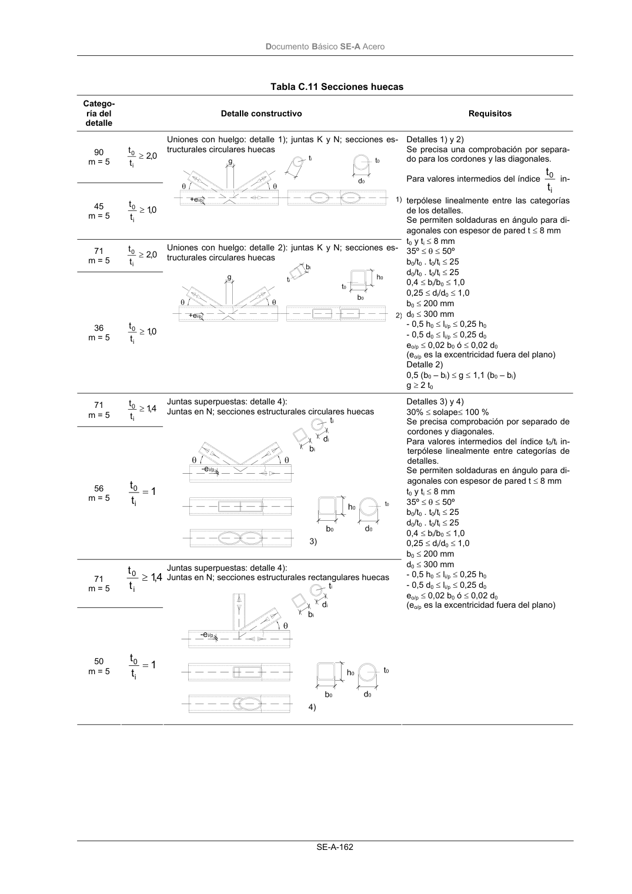

DB-SE-A · Página 164 · versión 2007-10-23
SHA256: 9ed9ea694aabfbda3bfbbef40dfe9223fde05d13c35bc2ba9751e5a96a22a64f · página física 164 de 168 · métodos de encabezado
solo si están cotejados.
Documento · ← p. 163 · p. 165 →
Formatos: Markdown · JSON de bloques · PDF p. 164 · imagen PNG
Documento Básico SE-A Acero SE-A-162 Tabla C.11 Secciones huecas Catego- ría del detalle Detalle constructivo Requisitos 90 m = 5 0,2 t t i 0 ≥ 45 m = 5 0,1 t t i 0 ≥ Uniones con huelgo: detalle 1); juntas K y N; secciones es- tructurales circulares huecas 71 m = 5 0,2 t t i 0 ≥ 36 m = 5 0,1 t t i 0 ≥ Uniones con huelgo: detalle 2): juntas K y N; secciones es- tructurales circulares huecas Detalles 1) y 2) Se precisa una comprobación por separa- do para los cordones y las diagonales. Para valores intermedios del índice i 0 t t in- terpólese linealmente entre las categorías de los detalles. Se permiten soldaduras en ángulo para di- agonales con espesor de pared t ≤ 8 mm t0 y ti ≤ 8 mm 35º ≤ θ ≤ 50º b0/t0 . t0/ti ≤ 25 d0/t0 . t0/ti ≤ 25 0,4 ≤ bi/b0 ≤ 1,0 0,25 ≤ di/d0 ≤ 1,0 b0 ≤ 200 mm d0 ≤ 300 mm - 0,5 h0 ≤ li/p ≤ 0,25 h0 - 0,5 d0 ≤ li/p ≤ 0,25 d0 eo/p ≤ 0,02 b0 ó ≤ 0,02 d0 (eo/p es la excentricidad fuera del plano) Detalle 2) 0,5 (b0 – bi) ≤ g ≤ 1,1 (b0 – bi) g ≥ 2 t0 71 m = 5 4 ,1 t t i 0 ≥ 56 m = 5 1 t t i 0 = Juntas superpuestas: detalle 4): Juntas en N; secciones estructurales circulares huecas 71 m = 5 4 ,1 t t i 0 ≥ 50 m = 5 1 t t i 0 = Juntas superpuestas: detalle 4): Juntas en N; secciones estructurales rectangulares huecas Detalles 3) y 4) 30% ≤ solape≤ 100 % Se precisa comprobación por separado de cordones y diagonales. Para valores intermedios del índice t0/ti in- terpólese linealmente entre categorías de detalles. Se permiten soldaduras en ángulo para di- agonales con espesor de pared t ≤ 8 mm t0 y ti ≤ 8 mm 35º ≤ θ ≤ 50º b0/t0 . t0/ti ≤ 25 d0/t0 . t0/ti ≤ 25 0,4 ≤ bi/b0 ≤ 1,0 0,25 ≤ di/d0 ≤ 1,0 b0 ≤ 200 mm d0 ≤ 300 mm - 0,5 h0 ≤ li/p ≤ 0,25 h0 - 0,5 d0 ≤ li/p ≤ 0,25 d0 eo/p ≤ 0,02 b0 ó ≤ 0,02 d0 (eo/p es la excentricidad fuera del plano)
